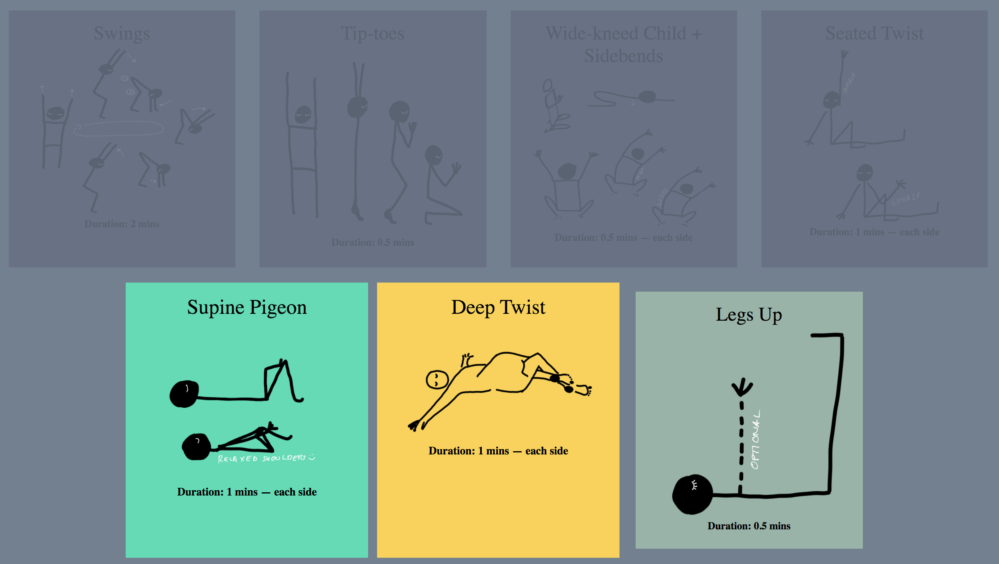

Yoga asana sequence player.
Concept and sequences by Kit Kuksenok. Code by Eric H. Gorski.
It's a work in progress :)
When each new pose starts, the bell sounds, and the relevant card becomes yellow. Here, there are two yellow cards: because the second follows right after the first. For example, then there are two poses and they are meanth to both be done on the right, and then both on the left.
Asymmetric poses start with yellow, and then the "other side" color is green. In this example, the bell has sounded and it's time to switch sides and go back to the first of these two poses.